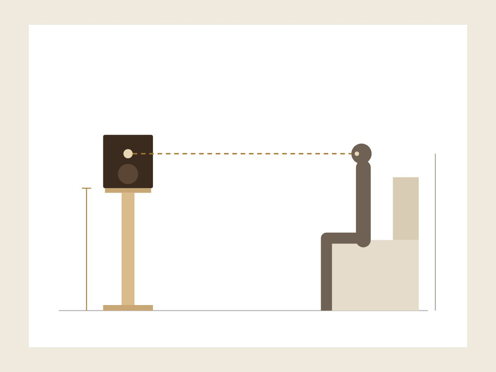
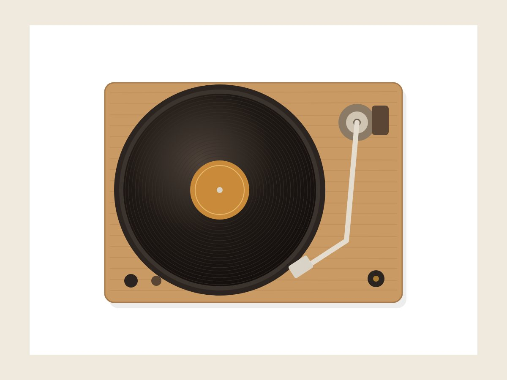
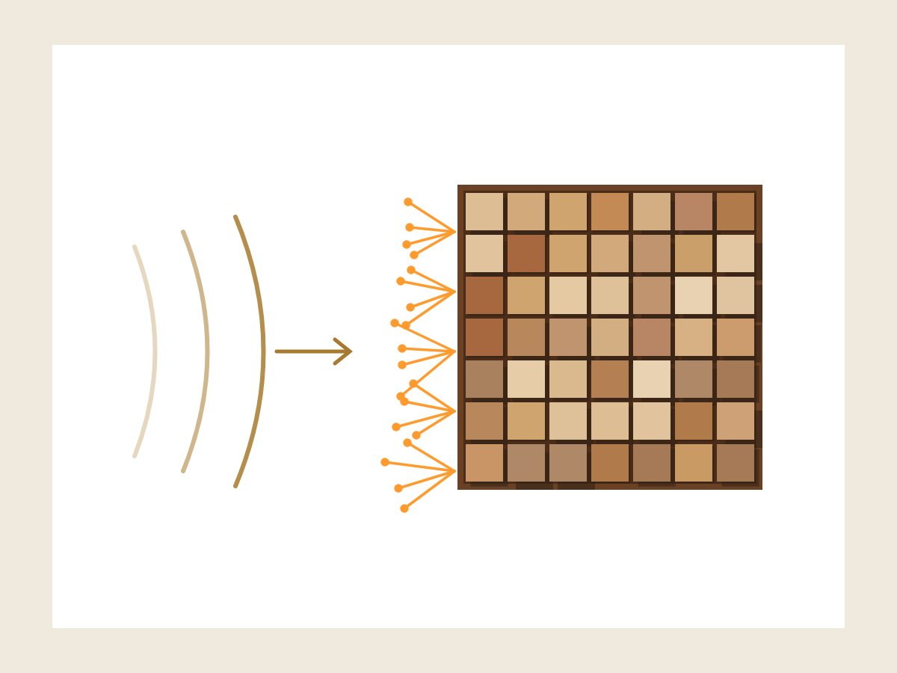
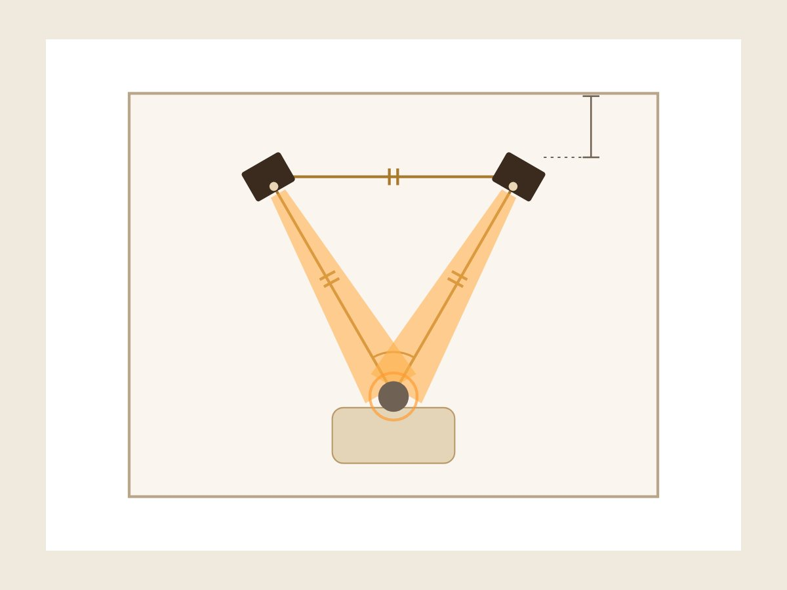
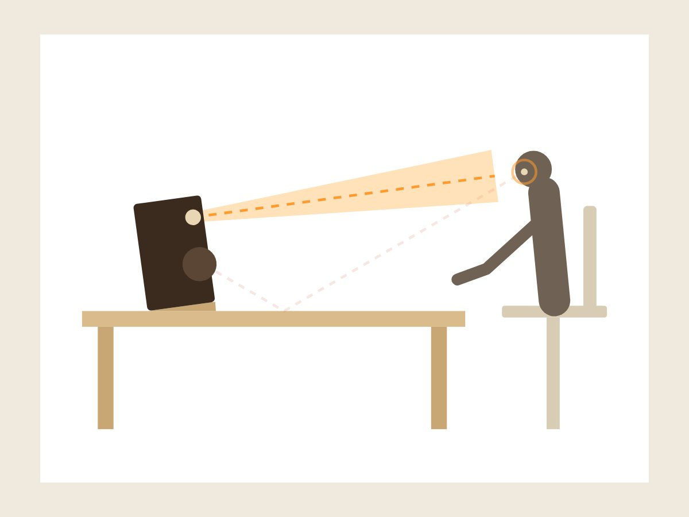

Guide Consigli pratici per sistemare l'impianto hi-fi e la stanza d'ascolto
Quello che ho imparato costruendo mobili, stand e pannelli per gli impianti dei miei clienti: misure, legni, posizionamento. Con qualche strumento per fare i conti in fretta.

A che altezza mettere le casse?
La regola del tweeter, come prendere le misure e un calcolatore che ti dice quanto deve essere alto lo stand.
Come conservare i vinili
Dischi in piedi, lontano dal caldo, nelle buste giuste: le regole e le misure per scegliere il porta vinili.

Come isolare il giradischi dalle vibrazioni
Da dove arrivano le vibrazioni che rovinano l'ascolto del vinile e come fermarle, dal mobile alla bolla.

Pannelli acustici in legno
Assorbire o diffondere, dove metterli con il trucco dello specchio e quanti ne servono: l'acustica della stanza spiegata semplice.

Come posizionare i diffusori
Triangolo d'ascolto, distanza dal muro e orientamento delle casse: le regole per sentire bene in soggiorno.

Diffusori sulla scrivania
Perché inclinare le casse verso le orecchie, a che distanza metterle e come staccarle dal piano.